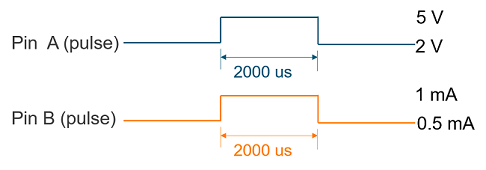
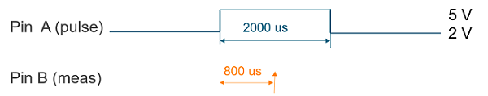
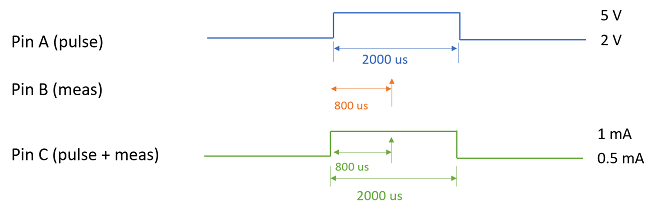
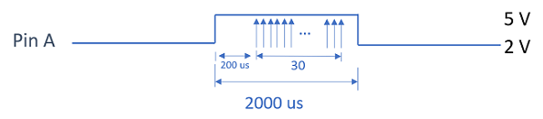
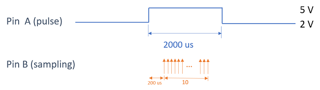
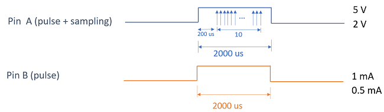
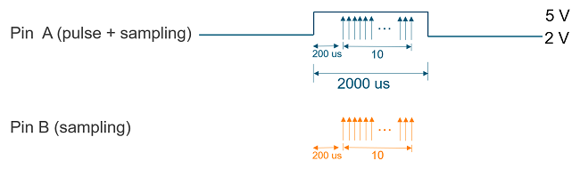

Parallel pulse actions with measurement and sampling
SmartRDI supports generating pulse, taking a single measurement, and sampling in parallel on one or multiple DC Scale pins in an execute() command.
Pulse with single measurement on a single DC Scale pin
SmartRDI provides vPulse() and iPulse() to generate voltage and current pulse. The two commands allow you to force pulse and perform a single measurement in parallel on a single DC Scale pin.
For example, forcing pulse:
rdi.dc().pin("A").vPulse(5 V,2 V,2000 us).execute();
Forcing pulse and performing measurement:
rdi.dc().pin("A").vPulse(5 V,2 V,2000 us).measWait(800 us).iMeas().execute();
For illustrations of the two scenarios, refer to the images in the following sections.
Pulse and single measurement on multiple DC Scale pins
Starting from 7.10.0, SmartRDI supports parallel pulse and single measurement on multiple DC Scale pins.
- Two pulse actions on two different pins in one execute():
rdi.dc().pin("A").vPulse(5 V,2 V,2000 us) .pin("B").iPulse(1 mA,0.5 mA,2000 us) .execute();
- Pulse action on one pin while single action on another pin:
rdi.dc().pin("A").vPulse(5 V,2 V,2000 us) .pin("B").vMeas().measWait(800 us) .execute();
- Pulse on a pin, measurement on a pin, and pulse and measurement on a pin at the same time:
rdi.dc().pin("A").vPulse(5 V,2 V,2000 us) .pin("B").vMeas().measWait(800 us) .pin("C").iPulse(1 mA,0.5 mA,2000 us).vMeas().measWait(800 us) .execute();
Parallel pulse and sampling on a pin or multiple DC Scale pins
Starting from 7.10.0, SmartRDI also supports parallel pulse and sampling on one or multiple DC Scale pins.
In one execute(), parallel pulse and sampling can be performed on a pin or on multiple DC Scale pins.
- Pulse with sampling on a single DC Scale pin in one
execute():
rdi.dc().pin("A").vPulse(5 V,2 V,2000 us) .iMeas().samples(30).FS(100 kHz).measWait(200 us) .execute();
- Pulse on a pin and sampling on another pin in one
execute():
rdi.dc().pin("A").vPulse(5 V,2 V,2000 us) .pin("B").vMeas().samples(10).FS(10 kHz).measWait(200 us) .execute();
- Pulse and sampling on a pin and pulse on another pin in one
execute():
rdi.dc().pin("A").vPulse(5 V,2 V,2000 us).vMeas().samples(10).FS(10 kHz).measWait(200us) .pin("B").iPulse(1 mA,0.5 mA,2000 us) .execute();
- Pulse and sampling on a pin and sampling on another pin in one
execute():
rdi.dc().pin("A").vPulse(5 V,2 V,2000 us).vMeas().samples(10).FS(10 kHz）.measWait(200 us) .pin("B").iMeas().samples(10).FS(10 kHz).measWait(200 us) .execute();
Rule of parallel pulse, measurement and sampling on multiple DC Scale pins
- The following setups can be different for different pins:
- The following commands or parameters must have the same value for different pins:
- Pulse time in iPulse() or vPulse().
- Sample number in samples().
- Sample rate in FS(), sampleCycle() or samplePeriod().
- measWait().
Example
rdi.dc().pin("A").vPulse(5 V,2 V,2000 us)
.pin("B").vMeas().measWait(800 us)
.pin("C").iPulse(1 mA,0.5 mA,2000 us).vMeas().measWait(800 us)
.execute();
Functional changes
- Introduced in SmartRDI 7.10.0